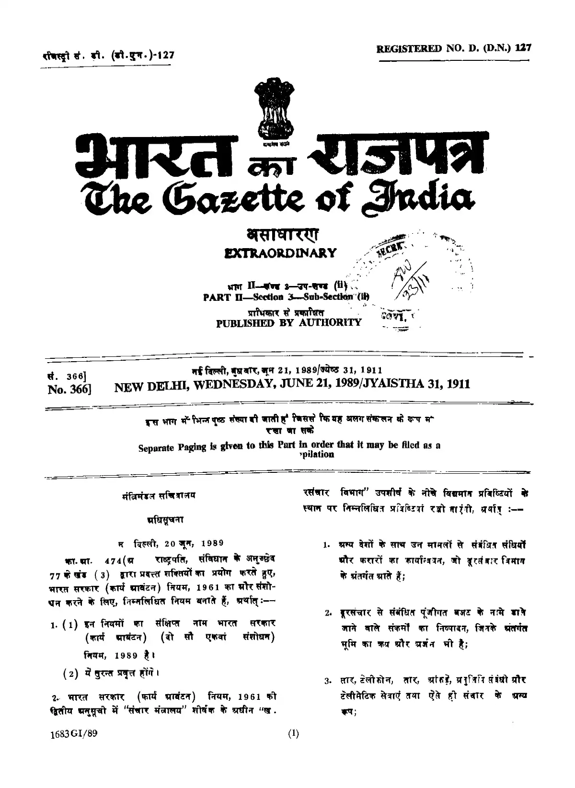
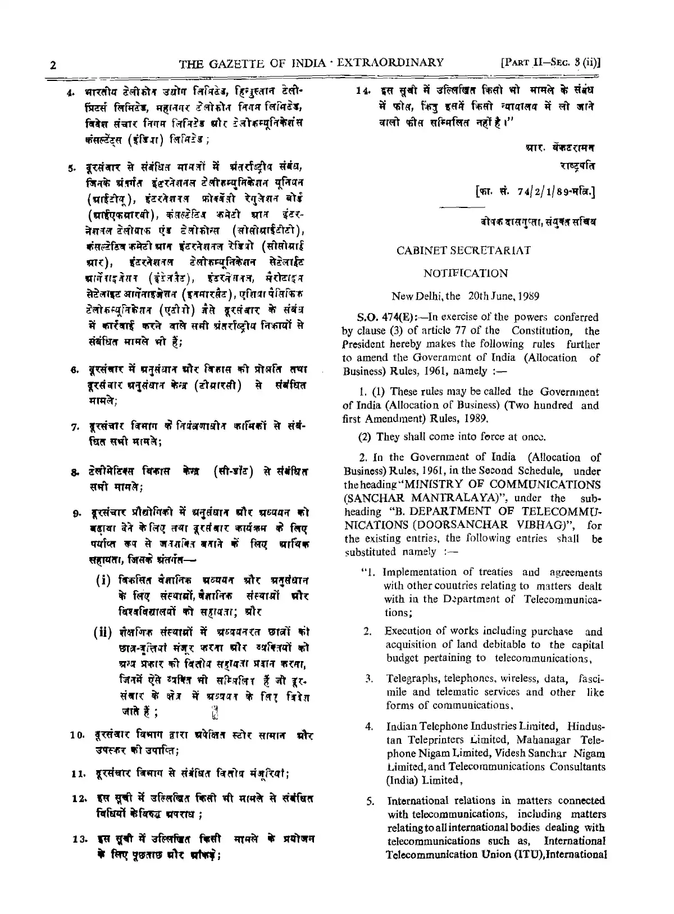
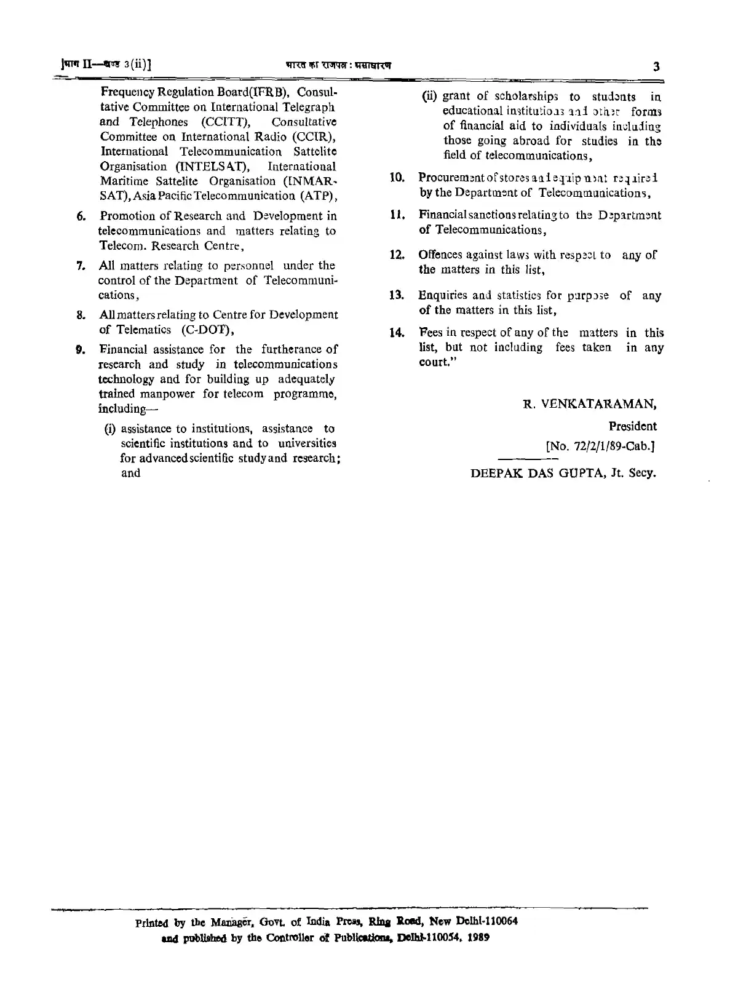

Amendment #201 (S.O. 474(E), 1989)
1 change: 0 to the First Schedule, 1 to the Second Schedule. 1 applied
What it did to the ministries
- grewMinistry of Communications grows from 13 to 17 subjects change 1 · histories: Communications
The order, page by page
Page 1 of 4

Page 2 of 4

1Schedule 2 › MINISTRY OF COMMUNICATIONS › DEPARTMENT OF TELECOMMU- NICATIONS
- 1. Implementation of treaties and agreements with other countries relating to matters dealt with in the Department of Telecommunications
- 2. Execution of works including purchase and acquisition of land debitable to the capital budget pertaining to telecommunications
- 3. Telegraphs, telephones, wireless, data, fascimile and telematic services and other like forms of communications
- 4. Indian Telephone Industries Limited, Hindus - tan Teleprinters Limited, Mahanagar Telephone Nigam Limited, Videsh Sanchar Nigam Limited, and Telecommunications Consultants (India) Limited
- 5. International relations in matters connected with telecommunications, including matters relating to all international bodies dealing with telecommunications such as, International Telecommunication Union (ITU), International Frequency Regulation Board (IFRB), Consultative Committee on…
- 10. SAT), Asia Pacific Telecommunication (ATP)
and 7 more
- 6. Promotion of Research and Development in
- 11. telecommunications and matters relating to Telecom. Research Centre
- 12. 7. All matters relating to personnel under the control of the Department of Telecommunications
- 13. 8. All matters relating to Centre for Development of Telematics (C-DOT)
- 14. 9. Financial assistance for the furtherance of research and study in telecommunications technology and for building up adequately trained manpower for telecom programmo including-
- i. assistance to institutions, assistance to scientific institutions and to universities for advanced scientific study and research and
- ii. grant of scholarships to students educational institutions and other forms of financial aid to individuals including those going abroad for studies in the field of telecommunications Procurement of stores and equipment required by the Department of Telecommunications Financial sanctions relating…
applied at schedule 2 › ministry MINISTRY OF COMMUNICATIONS › department B in the Rules after #201
read page break
Page 3 of 4

Page 4 of 4
How this document was read
From the Government of India (Allocation of Business) Rules, 1961 and their amendments, as published by the Cabinet Secretariat (cabsec.gov.in), read by orgpedia. The readings of the older scanned gazettes have known gaps.